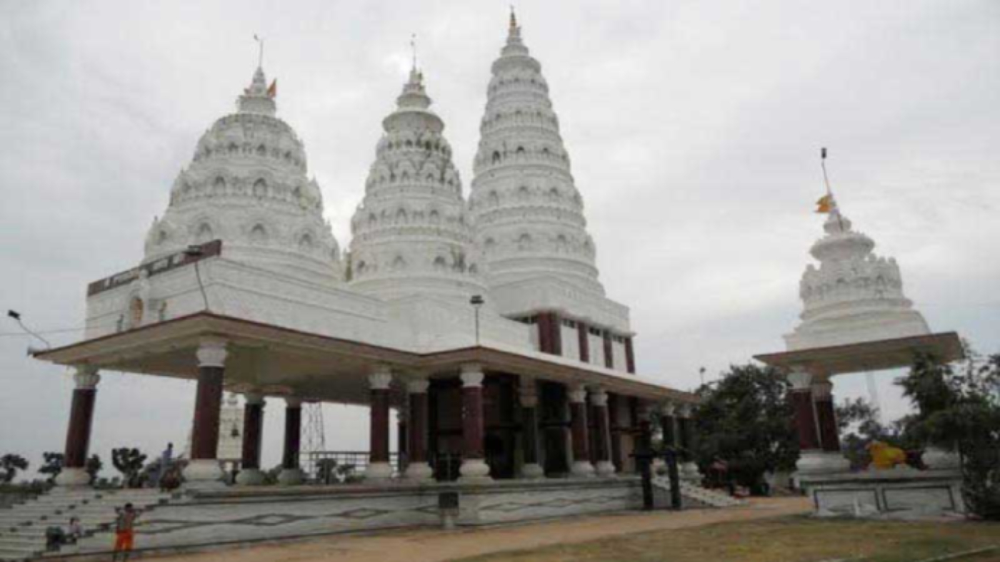
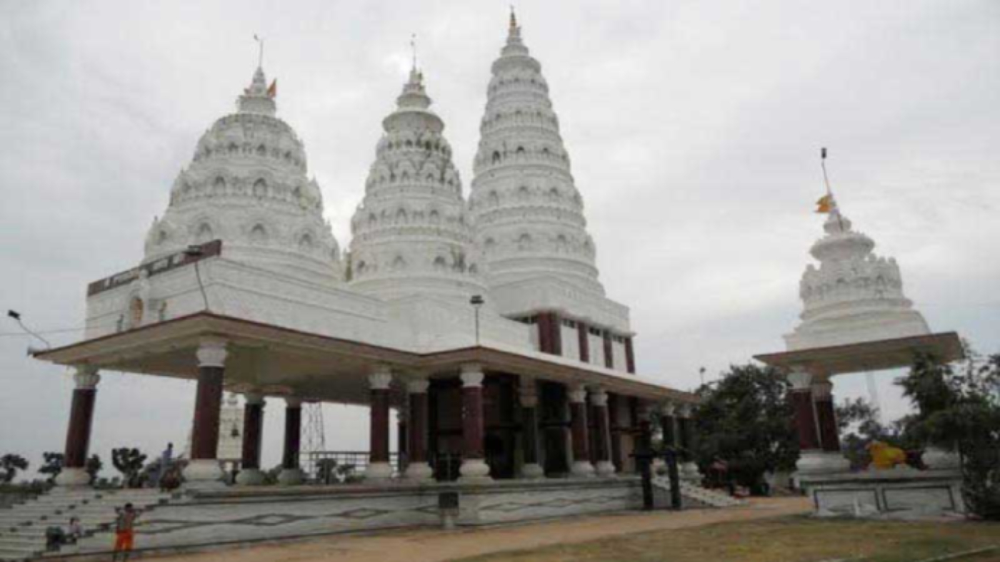

Ashokdham Mandir, also known as Indradamneshwar Mahadev Mandir, is a grand temple complex dedicated to Lord Shiva, located in Balgudar village, Lakhisarai district, Bihar. The temple stands at the confluence of the Kiul, Haruhar, and Ganga rivers, making it a spiritually charged destination for millions of devotees every year.
Historical Legacy
The roots of Ashokdham Mandir trace back to the 8th century, when Narayan Pal of the Pala Empire initiated regular worship of the Shivlingam. A grand temple was constructed in the 12th century by King Indradyumna, but it was lost to time and nature until a miraculous rediscovery in 1977, when two boys, Ashok and Gajanand, unearthed a giant Shivlingam while playing gilli-danda.
The temple's reconstruction began in 1993, inaugurated by the Shankaracharya of Jagannathpuri, and the present-day complex was developed under the guidance of the Shree Indradamneshwar Mahadev Trust from 2002 onwards.
Architectural Splendor
- The complex features a high Mandapam at the entrance and a vast campus with four main temples: the central shrine of Lord Shiva, and temples dedicated to Goddess Parvati, Nandi, and Goddess Durga.
- Blending traditional Hindu and Buddhist architectural styles, the temple is adorned with intricate carvings, ornate pillars, and beautiful sculptures, some depicting scenes from Buddha’s life.
- Local stone and marble enhance its timeless appeal, while the layout follows Vastu Shastra principles for harmony and peace.
Religious and Cultural Significance
Ashokdham Mandir is revered as the "Deoghar of Bihar"—a place where devotees believe every wish is fulfilled. The temple is a hub for Hindu rituals, cultural activities, and social welfare, including mass marriages for underprivileged families.
The temple also preserves ancient Buddhist traditions, with relics and inscriptions that highlight its multi-faith legacy.
Festivals and Celebrations
- Maha Shivratri: The most important festival, attracting millions of pilgrims who offer Ganga water to Lord Shiva and participate in grand rituals.
- Buddha Purnima & Dharma Chakra Day: Celebrated with prayers, meditation, and cultural performances, reflecting the temple’s Buddhist heritage.
Visitor Information
- Location: Ashokdham Mandir, Balgudar, Lakhisarai, Bihar 811311
- How to Reach:
- By Air: Nearest airport is Patna
- By Train: Lakhisarai Railway Station (5–7 km away)
- By Road: Well connected to Lakhisarai town and major highways
- Stay: No stay facility at the temple; arrange accommodation in Lakhisarai city[5].
Why Visit Ashokdham Mandir?
- Experience the spiritual energy of a temple rediscovered after centuries.
- Marvel at the blend of Hindu and Buddhist art and architecture.
- Participate in vibrant festivals and rituals.
- Enjoy the serene riverside setting and the temple’s peaceful ambiance.